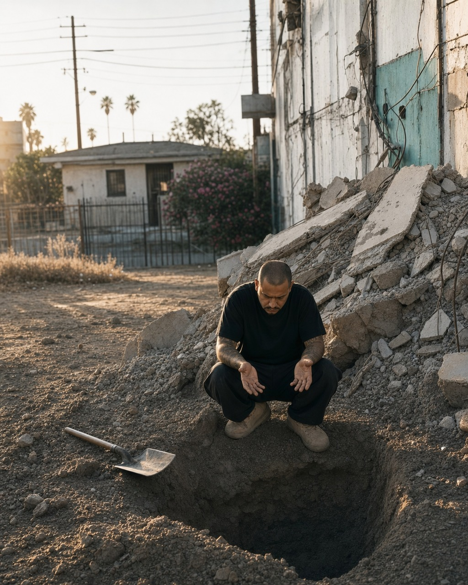
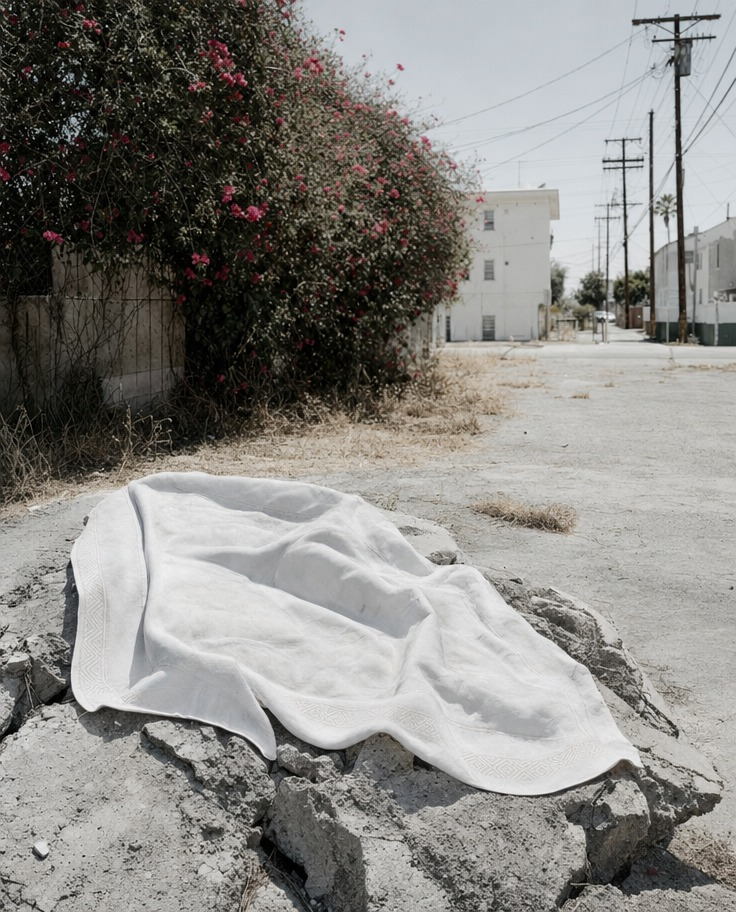
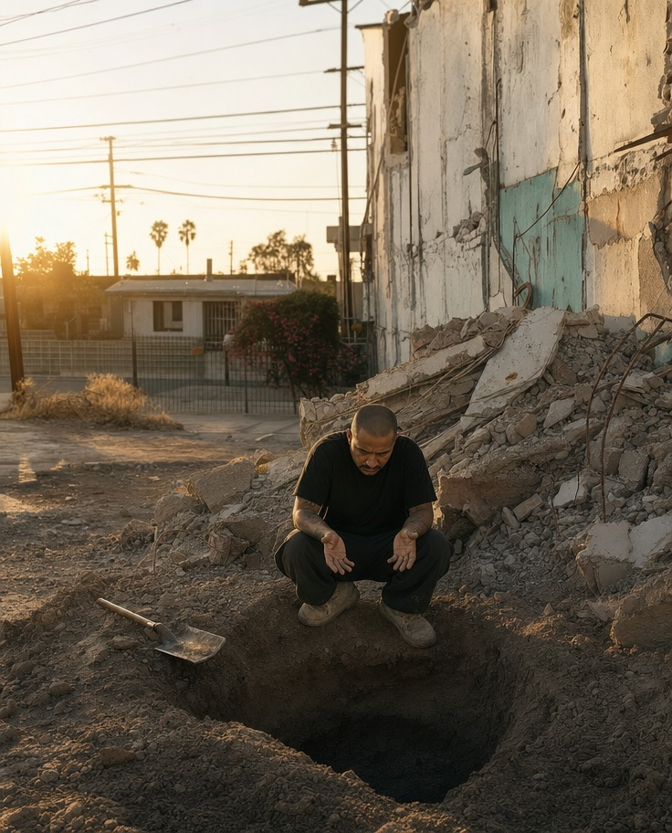
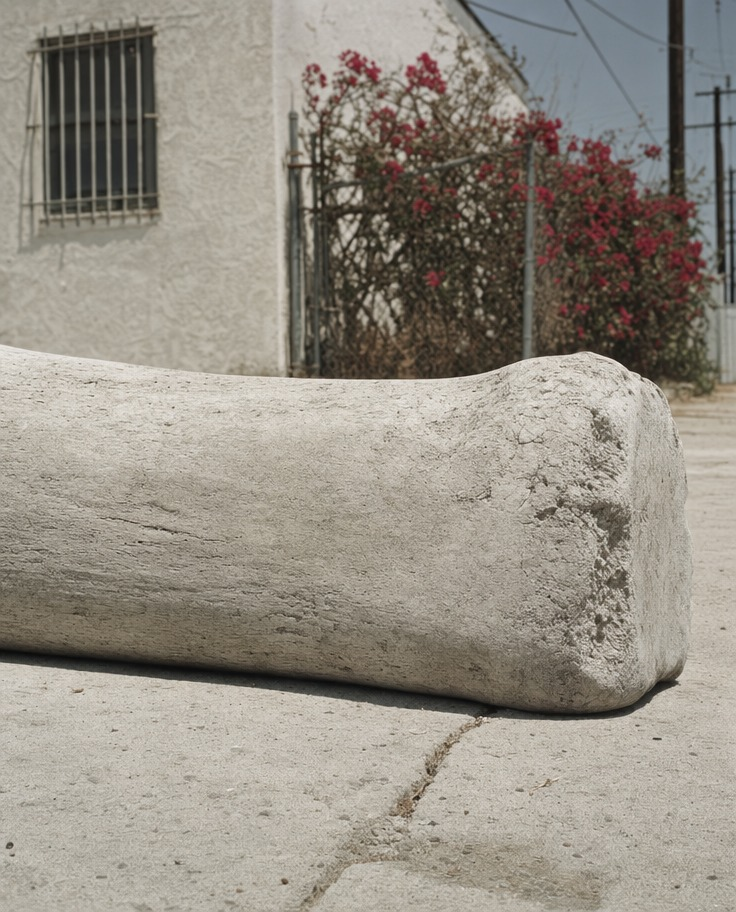
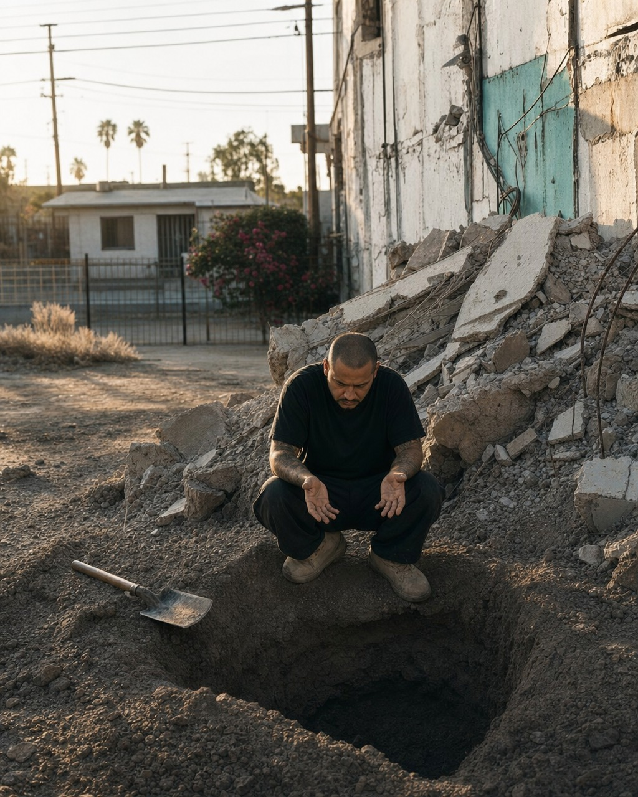
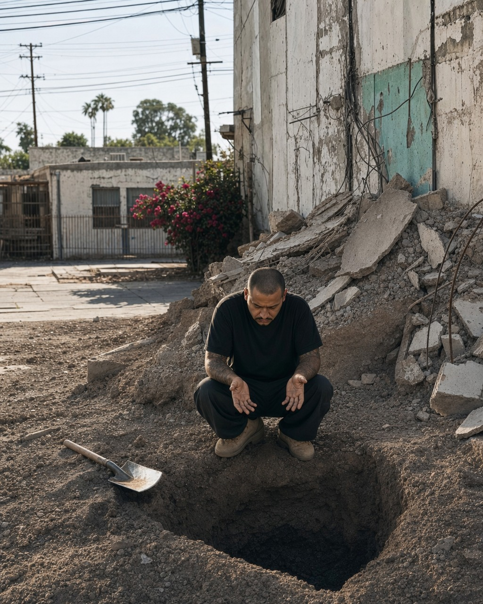

vince_20260614_006_growing-risk-thousands-buried.jpg019ec54f-f57d-7c53-afeb-bbecf2d07991
shared/digest/raw-2026-06-14.json.
| Step | Detail | Cost |
|---|---|---|
| Guardian API (2 pages × 25 stories) | Free tier | $0.00 |
| Guardian body text enrichment (46 stories) | Same API, no extra cost | $0.00 |
| Step 1 total | $0.00 |
vince/style-state.json. Full prompt assembled: 2,086 chars. Saved to tmp/prompt-2026-06-14.txt.| Step | Model | Est. tokens (in / out) | Cost |
|---|---|---|---|
| Story ranking (1 of 30 candidates) | Claude Haiku 4.5 | ~3K / 150 | $0.003 |
| Anchor extraction | Claude Opus | ~6K / 400 | $0.120 |
| Scene generation (3 divergent compositions) | Claude Opus | ~10K / 1,500 | $0.263 |
| Blind reverse test × 3 scenes | Claude Haiku 4.5 | ~6K / 600 total | $0.007 |
| Critique gate × 3 scenes | Claude Sonnet 4.6 | ~9K / 900 total | $0.041 |
| Step 2 total | $0.43 |



| Step | Model | Detail | Cost |
|---|---|---|---|
| Draft #1 — generation | GPT Image 2 (fal.ai) | 512×640, text-to-image, high | ~$0.050 |
| Draft #1 — vision analysis + blind test | Sonnet 4.6 + Haiku | ~5K in + image / ~800 out | ~$0.030 |
| Draft #2 — generation | GPT Image 2 (fal.ai) | 512×640, text-to-image, high | ~$0.050 |
| Draft #2 — vision analysis + blind test | Sonnet 4.6 + Haiku | ~5K in + image / ~800 out | ~$0.030 |
| Draft #3 — generation | GPT Image 2 (fal.ai) | 512×640, text-to-image, high | ~$0.050 |
| Draft #3 — vision analysis + blind test | Sonnet 4.6 + Haiku | ~5K in + image / ~800 out | ~$0.030 |
| Direction selection (3-way compare) | Sonnet 4.6 | ~6K in + 3 images / ~300 out | ~$0.032 |
| Divergence subtotal | 3 images + 3 analyses + 1 compare | ~$0.27 |
openai/gpt-image-2/edit (img2img). Pass 1 seeds from chosen draft #2. Passes 2 and 3 seed from the current best (pass 1 if improved, otherwise best is held). After each pass, a comparative review picks the stronger of the new render vs. current best. A final 3-way review selects the winner.

| Step | Model | Detail | Cost |
|---|---|---|---|
| Pass 1 (#4) — generation | GPT Image 2/edit (fal.ai) | 1024×1280, img2img, high | ~$0.195 |
| Pass 1 (#4) — vision analysis + blind test | Sonnet 4.6 + Haiku | ~5K in + image / ~800 out | ~$0.038 |
| Comparative review #4 vs #2 | Sonnet 4.6 | ~8K in + 2 images / ~200 out | ~$0.032 |
| Pass 2 (#5) — generation | GPT Image 2/edit (fal.ai) | 1024×1280, img2img, high | ~$0.195 |
| Pass 2 (#5) — vision analysis + blind test | Sonnet 4.6 + Haiku | ~5K in + image / ~800 out | ~$0.038 |
| Comparative review #5 vs #4 | Sonnet 4.6 | ~8K in + 2 images / ~200 out | ~$0.032 |
| Pass 3 (#6) — generation | GPT Image 2/edit (fal.ai) | 1024×1280, img2img, high | ~$0.195 |
| Pass 3 (#6) — vision analysis + blind test | Sonnet 4.6 + Haiku | ~5K in + image / ~800 out | ~$0.038 |
| Final 3-way comparative review | Sonnet 4.6 | ~10K in + 3 images / ~250 out | ~$0.044 |
| Title generation | Sonnet 4.6 | ~3K in / ~50 out | ~$0.010 |
| Convergence subtotal | 3 images + 3 analyses + 3 reviews + title | ~$0.82 |
| Step 3 total (divergence + convergence) | 6 images · 6 analyses · 4 comparisons | ~$1.09 |
docs/index.html. No API calls — pure Node.js JSON read + HTML template render. Cost: $0.00| Step 4 total | Node.js build, no API | $0.00 |
claude/jolly-tesla-krxkue → origin/claude/jolly-tesla-krxkueddac076 — "Pipeline run 2026-06-14: growing-risk-thousands-buried"| Step 5 total | git add / commit / push | $0.00 |
| Pipeline step | Description | Cost |
|---|---|---|
| Step 1 — fetch_news | Guardian API (2 pages, 46 enriched stories) | $0.00 |
| Step 2 — assemble_prompt | Story ranking (Haiku) + anchor (Opus) + 3 scenes (Opus) + blind tests (Haiku ×3) + critiques (Sonnet ×3) | $0.43 |
| Step 3A — divergence | 3 × (image gen 512×640 + vision analysis + blind test) + direction select | $0.27 |
| Step 3B — convergence | 3 × (image gen 1024×1280 img2img + analysis + blind test + comparative review) + 3-way final + title | $0.82 |
| Step 4 — build_log | Node.js HTML render, no API | $0.00 |
| Step 5 — commit & push | git operations | $0.00 |
| Automated pipeline total | 6 renders · 6 analyses · 4 comparisons · 1 anchor · 3 scenes | $1.52 |
| Cost category | Amount |
|---|---|
| Image generation (3 × 512×640 + 3 × 1024×1280 img2img) | $0.735 |
| Claude — scene assembly (Opus × 2 calls + Haiku + Sonnet × 3) | $0.434 |
| Claude — image analysis (Sonnet ×6 + Haiku ×6, vision) | $0.204 |
| Claude — comparisons + direction + title (Sonnet ×5) | $0.150 |
| Total | $1.52 |